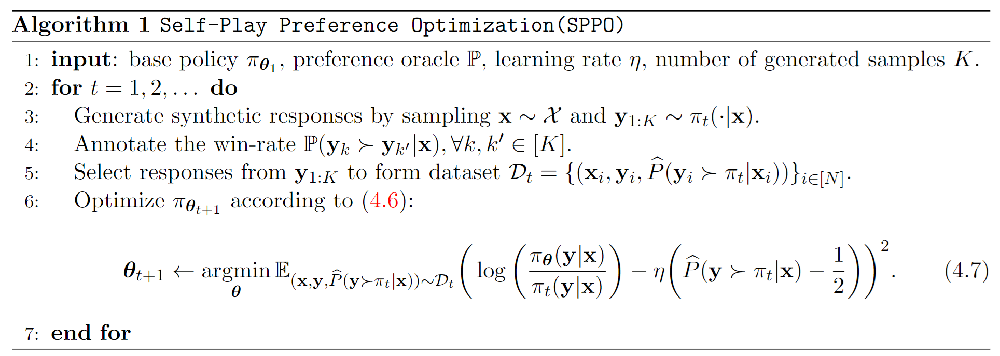

Abstract
Traditional reinforcement learning from human feedback (RLHF) approaches relying on parametric models like the Bradley-Terry model fall short in capturing the intransitivity and irrationality in human preferences. Recent advancements suggest that directly working with preference probabilities can yield a more accurate reflection of human preferences, enabling more flexible and accurate language model alignment. In this paper, we propose a self-play-based method for language model alignment, which treats the problem as a constant-sum two-player game aimed at identifying the Nash equilibrium policy. Our approach, dubbed Self-Play Preference Optimization (SPPO), approximates the Nash equilibrium through iterative policy updates and enjoys a theoretical convergence guarantee. Our method can effectively increase the log-likelihood of the chosen response and decrease that of the rejected response, which cannot be trivially achieved by symmetric pairwise loss such as Direct Preference Optimization (DPO) and Identity Preference Optimization (IPO). In our experiments, using only 60k prompts (without responses) from the UltraFeedback dataset and without any prompt augmentation, by leveraging a pre-trained preference model PairRM with only 0.4B parameters, SPPO can obtain a model from fine-tuning Mistral-7B-Instruct-v0.2 that achieves the state-of-the-art length-controlled win-rate of 28.53% against GPT-4-Turbo on AlpacaEval 2.0. It also outperforms the (iterative) DPO and IPO on MT-Bench and the Open LLM Leaderboard. Starting from a stronger base model Llama-3-8B-Instruct, we are able to achieve a length-controlled win rate of 38.77%. Notably, the strong performance of SPPO is achieved without additional external supervision (e.g., responses, preferences, etc.) from GPT-4 or other stronger language models.
Self-Play Preference Optimization (SPPO)
Large Language Models (LLMs) such as InstructGPT have demonstrated impressive capabilities, yet they face challenges in ensuring reliability, safety, and ethical alignment. Reinforcement Learning from Human Feedback (RLHF), or Preference-based Reinforcement Learning (PbRL), offers a solution by fine-tuning models to align with human preferences. Traditional RLHF methods rely on reward models to guide this process, but they often fall short of capturing the complexities of human behavior.
Recent research highlights the limitations of parametric preference models like Bradley-Terry, which assume consistent and transitive human preferences. Instead, studies suggest that human preferences can be inconsistent and influenced by various factors, challenging the effectiveness of these models.
In this paper, we introduce Self-play Probabilistic Preference Optimization (SPPO), a new self-play algorithm designed to solve the two-player constant-sum game for LLM alignment. SPPO utilizes an exponential weight update algorithm within a self-play framework, where policies are fine-tuned on synthetic data generated by the model itself. Our findings suggest that SPPO provides a robust and scalable solution for aligning large language models with human preferences.
Algorithm

Results

AlpacaEval 2.0 evaluation of models in terms of both normal and length-controlled (LC) win rates in percentage (%).
In this study, we adopt Mistral-7B-Instruct-v0.2 and Llama-3-8B-Instruct as our base models. The base models are further fine-tuned by SPPO on the 60k prompts dataset from Ultrafeedback. We use 20k prompts and generate 5 responses per prompt in each iteration. The preferences among the responses are labeled by PairRM, an efficient pair-wise preference model of size 0.4B. We evaluate SPPO on a wide range of benchmarks, including the HuggingFace Open LLM Leaderboard, MT-Bench, and AlpacaEval 2.0. Our findings highlight several key points:
- The iterative update via self-play can steadily improve the model performance throughout three iterations, boosting the AlpacaEval2.0 win rate up to 16%.
- SPPO significantly enhances model performance across a wide range of evaluation benchmarks without external supervision from stronger models like GPT-4;
- Compared with other symmetric pairwise losses such as DPO or IPO, the SPPO loss can effectively increase the log-likelihood of the chosen response and decrease that of the rejected response;